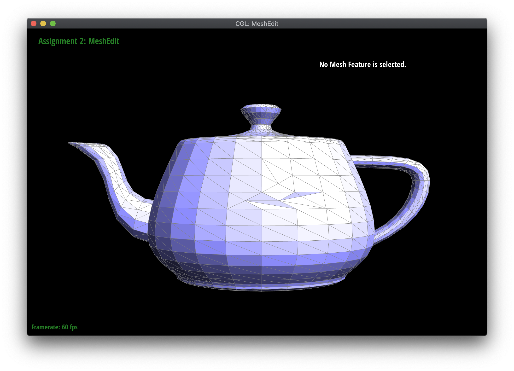

Website Submission Link: https://cal-cs184-student.github.io/sp22-project-webpages-doinksta/proj2/index.html
De Casteljau’s algorithm is a recursive algorithm used to compute points along the Bezier curve. The algorithm takes in as input an ordered list of n control points and a real value t between 0 and 1. On the first pass of de Casteljau’s algorithm, we compute n - 1 linear interpolations between consecutive pairs of points that were initially given to us, using a weight of (1 - t) for the first point and a weight of t for the second point; this creates the second iteration of ordered points of length n - 1. We then repeat this process recursively to get the next iteration of points, all the way until we only have one point. This is the point on the Bezier curve that corresponds with the value of t imputed; as t varies between 0 and 1, this draws out the entirety of the Bezier curve defined by the control points.
Done!
|
|
|
| Step 1 | Step 2 | Step 3 |
|
|
|
| Step 4 | Step 5 | Step 6 |
 |
 |
 |
| Low-valued t | Medium-valued t | High-valued t |
To use de Casteljau for Bezier surfaces, we first need to take in as input a grid of n x n control points and two parameters u and v that both range between 0 and 1, instead of simply an ordered list of n control points and one parameter t that varies between 0 and 1 (which was for the 2D case). Then, for each row inside our grid of control points, we can recursively apply de Casteljau’s algorithm with parameter u until we end up with a single point for each row. Afterwards, using these n remaining points, we can once again apply de Casteljau’s algorithm with parameter v to receive our final point, which becomes a point on the Bezier surface.

First, we implemented a while loop that traverses through all the edges incident from the vertex. We know that different edges will point towards different faces, so if we grab the face associated with each edge incident from the vertex, that will give us all the faces incident from the vertex. For each face, we computed the cross product of two of its edges and divided by 2; this resulted in a normal vector with magnitude equal to the area of the triangular face. Finally, we added these weighted normals up from each face and then normalized the final vector to get the area-weighted vertex normal.
| With Vertex Normals | Without Vertex Normals |
|---|---|
To implement the edge flip operation, we first labeled every component involved in the edge flip (the two triangle faces that were neighboring the edge to be flipped, and all of their vertices, edges, etc.). We then redrew the entire two triangles after the edge flip, keeping all the labels of each component the same and assigning the two new half edges the labels of the two half edges that were removed during the flip. We then manually redefined in code each component’s fields pointed to so that it was a valid configuration. We managed to do all of this in one go because we wrote down our labeling conventions for each component beforehand :)
| Before Edge Flip | After Edge Flip |
|---|---|
 |
To implement the edge split operation, our approach was very similar to implementing the edge split operation. Once again, we labeled every component involved in the edge split (the two triangle faces that were neighboring the edge to be split upon, and all of their vertices, edges, etc.). We then redrew the diagram, but this time adding the new vertex, faces, and edges that were created during the split, and we assigned new labels / shifted old labels around until all the new components were labeled. We then manually redefined in code each component’s fields pointed to so that it was a valid configuration.
Our code that did the reassignment of pointers was correct in one try, but we ran into some issues regarding creating new vertices / faces / edges. To facilitate debugging, we tried returning the final vertex early within the code to see if segfaults / exceptions arose, and this helped pinpoint where the issues originated from.
| Before Edge Split | After Edge Split |
|---|---|
| Before Edge Splits and Edge Flips | After Edge Splits and Edge Flips |
|---|---|
|  |
Our code that did the reassignment of pointers was correct in one try, but we ran into some issues regarding creating new vertices / faces / edges. After combing through some documentation, we found the appropriate way to create these objects; afterwards, everything worked well.
We did not implement support for boundary edges.
To implement loop subdivision, we first computed the new locations of all the old and new vertices before doing the subdivision itself. We then updated our edge split function to label two of the brand new edges formed as “new” edges, to distinguish blue edges vs. black edges. Next, we implemented the subdivision of the mesh by splitting every edge and then flipping the new “blue” edges created in the process. Finally, we iterated through all the old edges and old vertices, and then set the midpoints of the edges / old vertices to their proper locations based on the weighting rules.
When we initially tested our code, we noticed that our meshes looked asymmetrical when upsampling them. To investigate why, we got rid of the weighting rules and set every old vertex’s new position to be at the origin (0, 0, 0). When we tried mesh upsampling with this version, we noticed that only one of the cube’s original vertices was sent into the center; all the other vertices remained where they originally were. This led us to realize that one of our for loops that updated vertex positions was not functioning, and once we fixed the bug, the mesh upsampling worked correctly.
As more and more iterations of loop subdivision are applied, sharp corners and edges become more rounded out. Presplitting certainly makes subdivision more even, however it doesn’t reduce the fact that the sharp edges get rounded across subdivisions. Perhaps using a different weighting function on the edges will prevent the rounding effect across subdivisions.
| No Loop Subdivision | Loop Subdivision Iteration 1 | Loop Subdivision Iteration 2 | Loop Subdivision Iteration 3 |
|---|---|---|---|
Each of the cubes faces were only subdivided into 2 triangles, which would then place unequal weight on each of the corner vertices on the next position update. In order to alleviate this problem, you can split the cube face into 4 triangles, and the cube ends up looking more symmetric since each of its neighbors are now almost equidistant from the point.
| Preprocessed? | No Loop Subdivision | Loop Subdivision Iteration 1 | Loop Subdivision Iteration 2 | Loop Subdivision Iteration 3 | Loop Subdivision Iteration 4 |
|---|---|---|---|---|---|
| Not Preprocessed | |||||
| Preprocessed |
We did not implement the extra credit extensions.